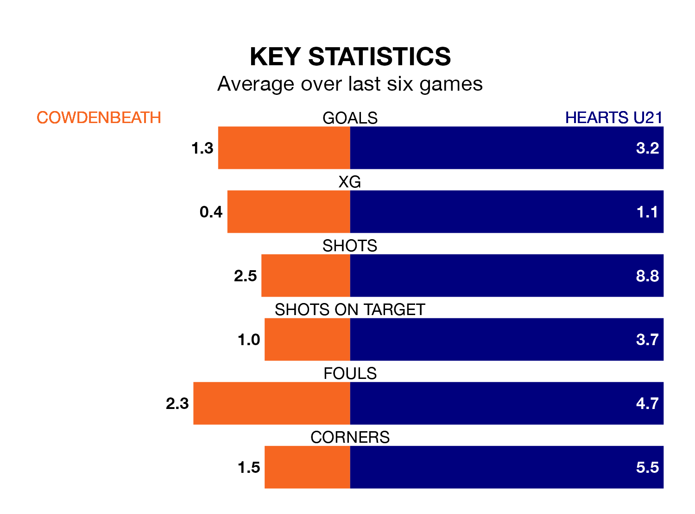

Two of Highland and Lowland Football Leagues's top sides face each other at Central Park in Friday's late kick-off, when zero-placed Cowdenbeath host third-placed Hearts U21.
Cowdenbeath have picked up four wins and eight draws from 17 games so far this season, and sit 16 points below the visitors going into the 7.45pm match.
Hearts, meanwhile, have won 10 and drawn six of 18, picking up 36 points.
With 47 goals in 18 games so far this season, Hearts U21 are the league's second-highest scorers with 2.6 goals per game. And they are conceding fewer than average, letting in 22 goals at a rate of 1.2 per game.
Cowdenbeath are also above average scorers, with 1.8 goals per game, compared to a league average of 1.7. They have conceded 1.7 goals per game.
The hosts are in bad form in Highland and Lowland Football Leagues, with no wins and four draws from their last six games.
With four wins and a draw over that period, Hearts' form is much better – they have taken 13 points from 18, compared to Cowdenbeath's four.
Over the last year, Cowdenbeath and Hearts U21 have played each other twice. Cowdenbeath won both of them.
Their last meeting was on August 11, when Cowdenbeath won 2-1 away.
Cowdenbeath's last match was on Saturday, a 3-3 draw against Celtic B, with Ciaren Chalmers (two) and Matthew McDonald getting the goals for Cowdenbeath.
Hearts U21 beat East Kilbride 4-2 last time out, on November 25, with Mackenzie Kirk (two), Bobby McLuckie and Callum Sandilands on the scoresheet.
